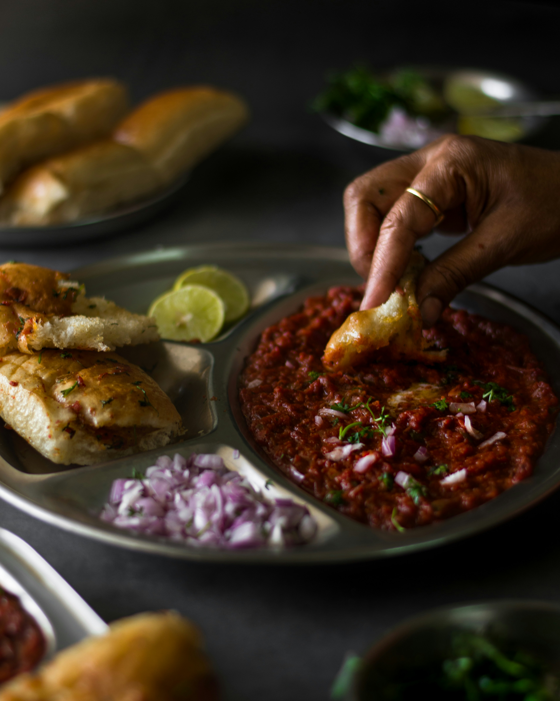

Pav Bhaji

Description
Pav Bhaji is a beloved Indian street food, originating from Mumbai. This dish consists of a spicy mashed vegetable curry (bhaji) paired with soft, buttery, toasted bread rolls (pav). The bhaji is made by mashing together vegetables like potatoes, tomatoes, and peas, then cooking them with flavorful spices, giving the dish its rich, vibrant color. Garnished with chopped onions, coriander, and a generous squeeze of lemon juice, Pav Bhaji is a perfect blend of spice and texture. It's comfort food at its finest and is enjoyed by people of all ages.
Ingredients:
For the Bhaji (Vegetable Curry):
- 4 medium potatoes (boiled and mashed)
- 1 cup green peas (boiled)
- 2 large tomatoes (chopped)
- 1 large onion (finely chopped)
- 1 green chili (chopped)
- 1/2 cup capsicum (chopped)
- 1 tsp ginger-garlic paste
- 1 tsp cumin seeds
- 1 tsp turmeric powder
- 1 tbsp Pav Bhaji masala
- 1 tsp red chili powder
- Salt to taste
- 3 tbsp butter
- 2 tbsp oil
- Water as needed
For Serving:
- 6 pav buns
- Butter (for toasting)
- Chopped onions
- Fresh coriander (chopped)
- Lemon wedges
Steps:
- Prepare the Bhaji: Heat oil and 1 tbsp of butter in a large pan. Add cumin seeds and let them crackle. Add the chopped onions, green chili, and ginger-garlic paste. Sauté until the onions turn golden brown. Then, add the chopped tomatoes and capsicum, and cook until they soften.
- Add Spices and Vegetables: Stir in the turmeric, red chili powder, and Pav Bhaji masala. Add the boiled and mashed potatoes, peas, and some water. Use a potato masher to mash all the ingredients together, creating a thick and smooth bhaji. Simmer for 10 minutes, adjusting water for desired consistency. Add salt to taste.
- Toast the Pav: Heat a pan with butter and toast the pav buns on both sides until they turn golden and slightly crispy.
- Serve: Serve the hot bhaji topped with a dollop of butter, chopped onions, fresh coriander, and lemon wedges. Pair it with the toasted pav buns.